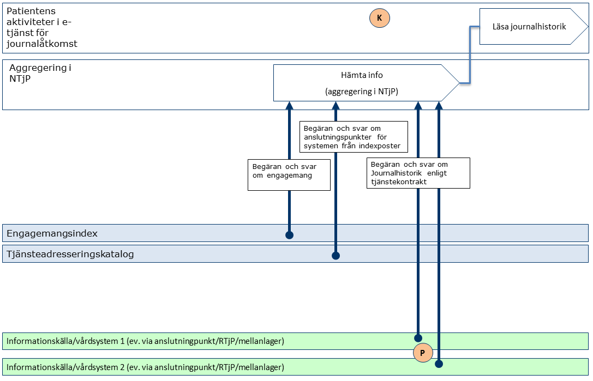
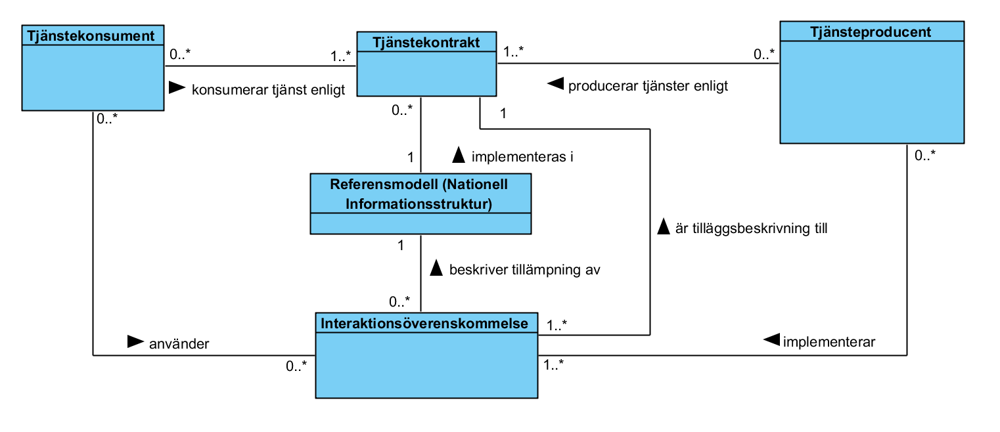
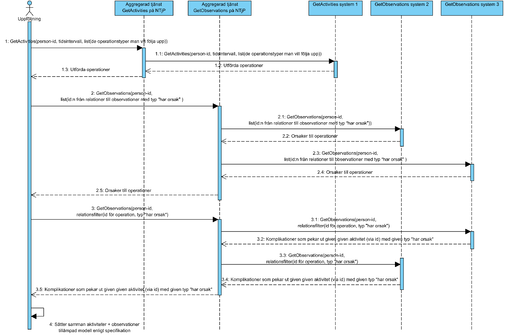
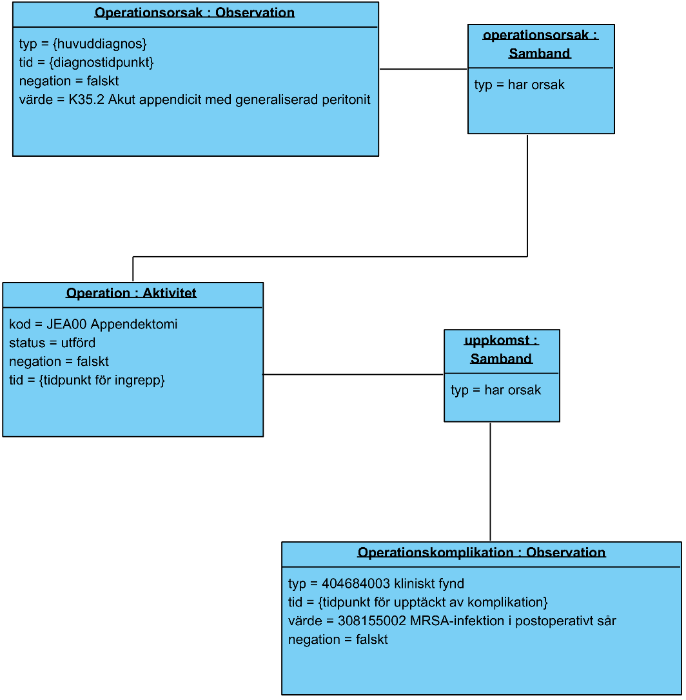
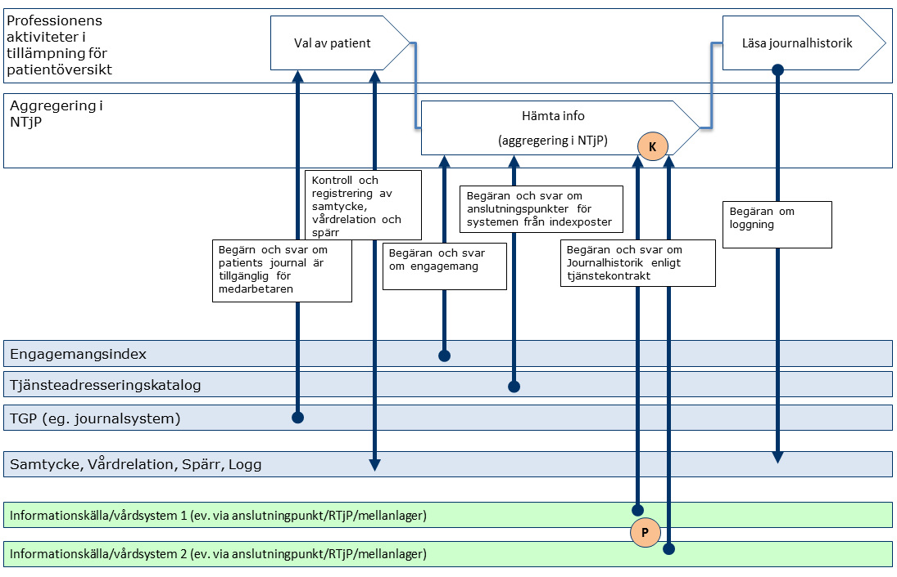
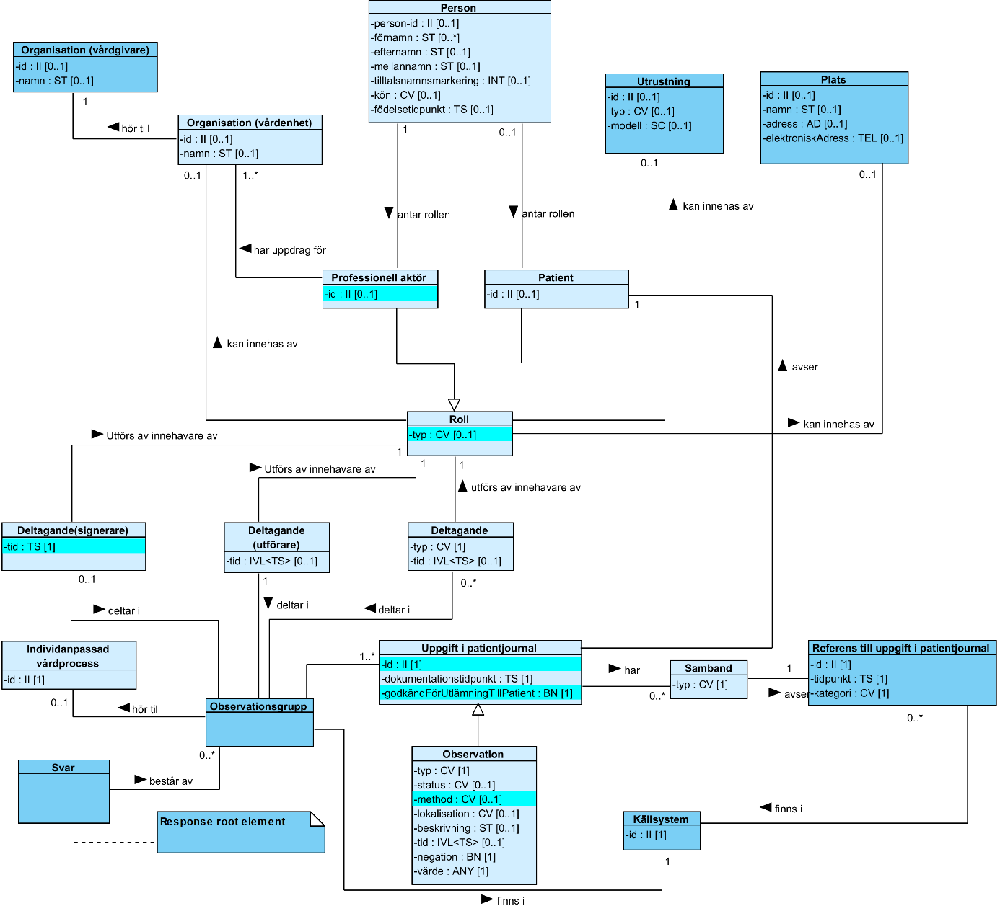

This fragment is not visible to the reader
This publication includes IP covered under the following statements.
| Type | Reference | Content |
|---|---|---|
| web | rivta.se | Länk |
| web | inera.atlassian.net | Länk |
| web | unitsofmeasure.org | Länk / Version 1.9 (2013-10-22) eller senare. |
| web | informationsstruktur.socialstyrelsen.se | Länk |
| web | bitbucket.org | Länk |
| web | www.socialstyrelsen.se | Länk |
| web | www.socialstyrelsen.se | Länk |
| web | inera.atlassian.net | Länk |
| web | rivta.se | Länk |
| web | www.inera.se | Länk |
| web | www.inera.se |
IG © 2024+
. Package inera.clinicalprocess-healthcond-basic#1.2.3 based on FHIR 4.0.1
. Generated 2026-10-08
Links: Table of Contents | QA Report |
|
img_002.png |
|
img_004.png  |
|
img_005.png  |
|
img_006.png  |
|
img_007.png  |
|
img_009.png  |
|
img_010.png  |
|
tree-filter.png
|